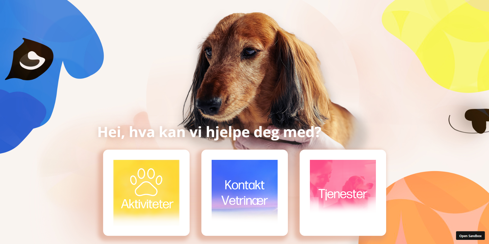
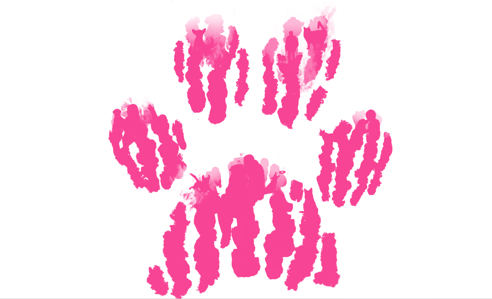
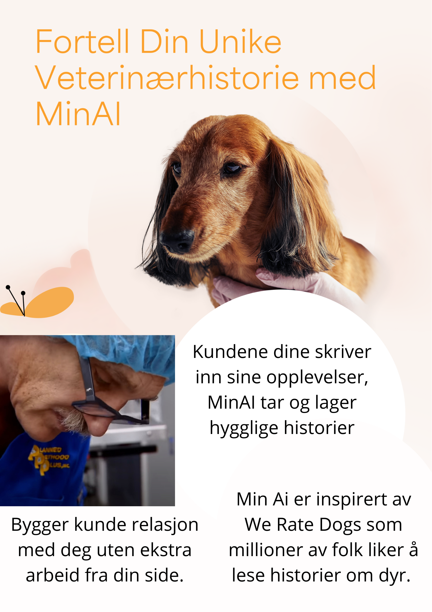
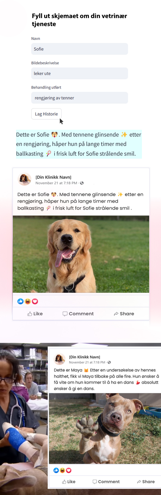

Jeg lager nettsider for å skape opplevelse og forstå kunden bedre. Ved bruk av AI, kunstig intelligens vil nettsider bli personlige og tilpasset til kunder for akkurat deres behov. Jeg har laget to nettsider konsepter for å hjelpe kunder med enklere å komme i kontakt med veterinær med bruk av design effekter. Nettsiden er laget at alt er rett foran deg og du trenger ikke å lete for å finne informasjonen. Link til nettsidene:
https://codesandbox.io/p/sandbox/full-pote-fjfmcp https://codesandbox.io/p/sandbox/farge-side-full-hjhr3t  Jeg implementerte AI i markedsføringsstrategien for en travel veterinærklinikk, med mål om å forsterke kundeforhold gjennom sosiale medier. I intervju med kunder ønsket de å forstå tjenester og omsorg gjennom sosiale medier. Inspirert av suksessen til We Rate Dogs, en populær sosial mediekonto med 9 millioner følgere, tilpasset jeg AI for å generere engasjerende innlegg som fremhever klinikkens tjenester og dyrenes omsorg. Dette gjorde det lettere for både eksisterende og potensielle kunder å få innsikt i hvordan klinikken opererer og den omsorgen de tilbyr.
Vi introduserte en konkurranse der de kan vinne gavekort ved å dele personlige historier om deres kjæledyr med vetrinæren. Disse historiene blir så omskapt av AI til fengende fortellinger som publiseres på nettsiden. Dette tiltaket har ikke bare styrket båndene med nåværende kunder, men også effektivt trukket til seg nye kunder. Ved å kommunisere klinikkens verdi effektiv gjennom kundenes egne historier, uten at det krever ekstra tid fra veterinæren. Og med innleggene har nå kundene det de trenger for å forstå omsorg og tillit på vetrinær sine ferdigheter for å starte samtale med vetrinæren.
 